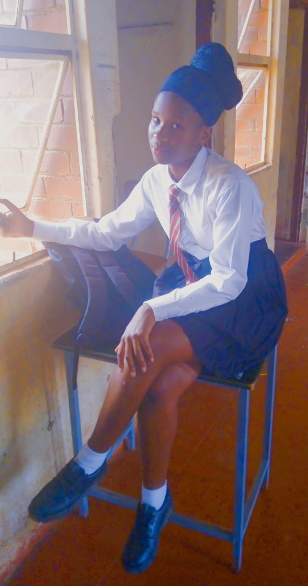
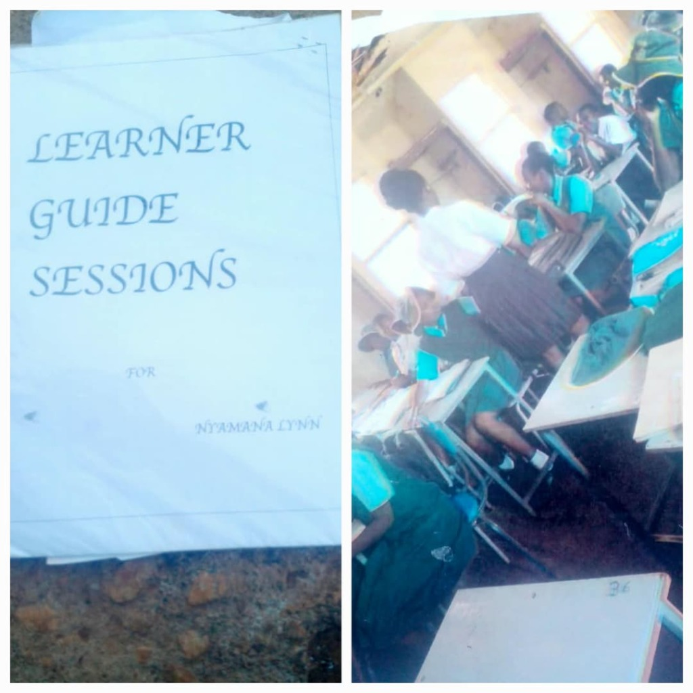
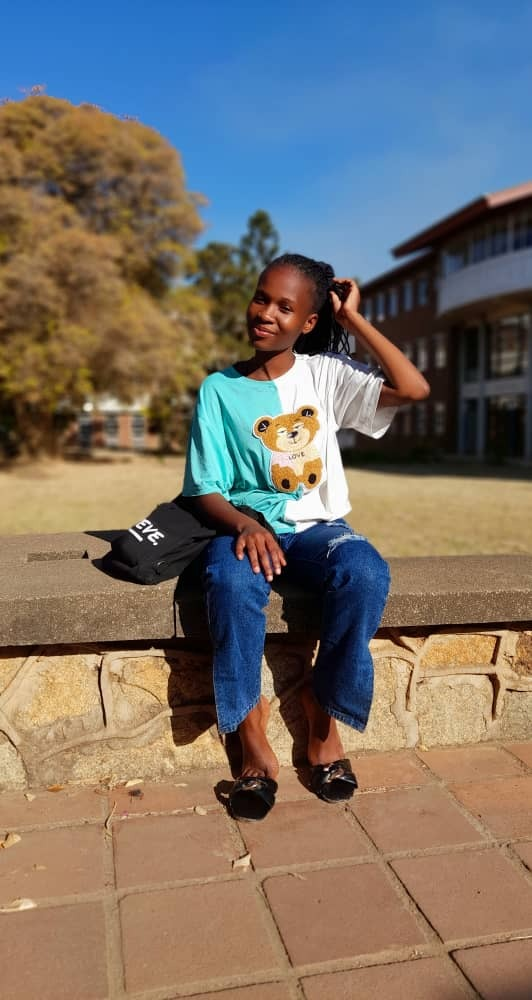
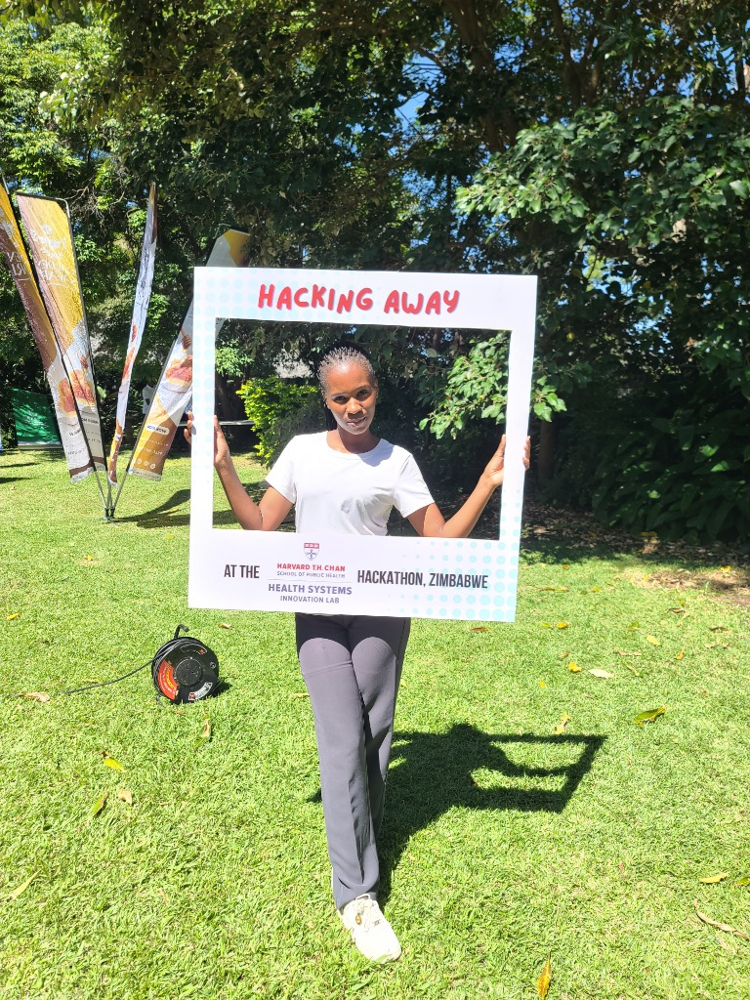

How CAMFED Rewrote My Future
Every single step was a triumph over odds designed to keep a rural girl in the dirt.
The Footsteps at the Door
Form 4, Form 5 & 6, ZIMSEC Exams & Dignity

Lynn T Nyamana • Form 5
Protected by CAMFED Total Care
“Advancing to Form 5 & 6 felt like an answered prayer. Full fees, uniforms, sanitary wear, and exam costs covered in full.”
If you have ever sat inside a rural classroom in Zimbabwe and heard the heavy footsteps of a headmaster walking down the corridor to read out the names of children whose fees were unpaid, you know the suffocating terror that grips a child's chest. Watching your friends pack their torn exercise books into plastic bags and make the long, humiliating walk home on the dusty red road is an ache that never leaves your memory.
In October 2021, as a Form 4 girl, that was my looming reality. And then, CAMFED did the whole job.
For the first time in my school life, my name was never called. I didn't have to look at the floor. I didn't have to pack my books. My heart was at peace because CAMFED covered everything.
I will never forget that bitter winter when the freezing winds swept through Hurungwe. While we shivered in thin cotton uniforms with our teeth chattering, CAMFED officers arrived carrying thick, warm jerseys, gently wrapping them around us and saying: “It is cold, you guys might feel the freeze.” That jersey wasn't just wool—it was dignity wrapped around my shoulders.
CAMFED brought clean uniforms, neat shoes, skirts, and sanitary wear so our menstrual cycles would never rob us of our education. And when ZIMSEC examinations came, they placed mathematical sets, rulers, and pens into our hands so we could face our exams without shame.
Advancing to Form 5 and 6 felt like an answered prayer. All I had to do was write an application letter with the word CAMFED on top, hand my subject list to my high school teacher mentor, Ms. Gurira, and receive the call: “Your examination fees are paid in full.” Ms. Gurira never let us feel abandoned.
🌸 The Quiet Sigh at Home:
“Behind every school fee deadline was the silent, agonizing weight carried by my family. When CAMFED paid my fees, bought my uniform, and handed me that winter jersey, they didn't just save my education—they lifted a suffocating stone from my family's chest. I will forever honor the Mother Support Groups and elders who quietly fight so daughters don't have to carry shame.”
Learner Guide & District Secretary
Mentoring Sisters & Hurungwe Leadership at 18

Lynn T Nyamana — CAMA Learner Guide
“Ploughing Back” • Hurungwe
“My story was no longer a secret; it was a lantern for other girls.”
In February 2022, after finishing my exams, the CAMFED Association (CAMA) welcomed me into the sisterhood. This was where my leadership began.
CAMA trained me as a Learner Guide. Stepping back into local schools as a big sister—standing before younger girls wrestling with the very peer pressures, early marriage risks, despair, and fears that once tormented me—unlocked something fierce in my spirit. I was living the CAMA value of Ploughing Back. My story was no longer a secret; it was a lantern for other girls.
At just 18 years old, fresh from my A-Levels, I took a leap of faith and contested for CAMA District Secretary for Hurungwe. And my CAMA sisters elected me!
Throughout this demanding leadership journey, whenever challenges arose regarding my duties or scholarship applications, CAMFED District Operations Officers Sis Lindiwe and Sis Diana, alongside our District CAMA Chairperson Sis Mercy (who quickly became a dear mentor, sister, and friend), were always there. Their guidance gave an 18-year-old girl the courage to lead with integrity.
Suddenly, an 18-year-old girl from rural Hurungwe was traveling to cities, sleeping in hotels she had only ever seen on television screens, sitting at boardroom tables with national leaders, and standing as a fierce voice and protector for thousands of rural sisters back home.
The $100 CAMA Seed & The Bus Ranks
Turning Rejection into Enterprise & University Tuition
The Bus Rank Route to University:
“I refused to let rejection bury my ambition. I packed my small bag, braved the midnight bus ranks, and turned that $100 CAMA seed into my first university semester.”
Fuel
Self-Reliance
Triumph
Tuition Earned
CAMA Value: Kudzosa • Turning Seeds into Destiny
When tertiary scholarships were first introduced, I applied with every shred of hope in my heart. But the first list came out—and my name was not on it.
That night was heavy with silence: “Is this where my journey ends? Do I go back to the fields?”
💔 The Silent Prayer from the Dusty Road:
“I remember clutching my small bag at the bus rank in the freezing dawn, counting dollar bills with shaking hands. Tears welled in my eyes as the exhaust smoke choked the air. I whispered into the quiet morning: ‘Lord, please don't let me become another statistic of wasted rural talent. I want to learn. I want to build.’ That prayer became my fuel.”
Lesser things would have broken my spirit. But CAMA had instilled the core value of Self-Reliance inside me. Taking a $100 CAMA business grant, I didn't sit down to weep—I packed my bags and started a cross-border trading business.
I braved the dusty bus ranks, the sleepless overnight journeys, and the grueling border queues. I counted every single dollar, saved every cent, and used my profits to fund my initial step into university on my own! I refused to let poverty bury my ambition. When the February intake opened, I reapplied—and the doors swung wide open.
CAMFED, CAMA & Mastercard Foundation
Shielded from Dropouts, Barred Exam Halls & Moral Compromises

Lynn T Nyamana • Part 1 (UZ)
Mastercard Foundation & CAMFED Scholar
“Arriving on the university campus shielded by full tuition, on-campus accommodation, living stipends, and total peace of mind.”
⚠️ The Untold Heartbreak of University in Africa:
At university, poverty is not just inconvenient—it is destructive. You watch brilliant classmates drop out mid-semester because tuition dried up. You see students crying outside examination halls, barred from writing their final papers over an unpaid balance. Worse, young girls are pushed into heartbreaking compromises and toxic peer pressures just to afford food, rent, or basic survival—desperately trying "to make things balance."
I was completely, unconditionally spared from that heartbreak. Because of CAMFED, CAMA, and the Mastercard Foundation, I stood out.
You can imagine what it means to pack your bags from home knowing that your university tuition has been paid in full, your accommodation for the whole semester is booked, and your meals for the entire term are completely sorted. All I had to do was board the bus, walk onto campus, and step into the lecture halls alone—without carrying the suffocating terror of unpaid fees, eviction from hostels, or toxic survival pressures.
Everything was catered for: full tuition, on-campus accommodation, meal allowances, a quarterly stipend of $150 for our basic personal needs, and a brand-new personal laptop. Behind this seamless protection stood dedicated officers like our CAMFED Tertiary Students Officer, Sis Winnie, who tirelessly ensures our academic, accommodation, and personal welfare are protected. I could sit in the computer lab with an unburdened mind, pouring all my soul into cloud architectures, algorithms, and building my future.
The Glowing Screen in the Dark
BSc Cloud Computing, Industrial Attachment & CAMA Tech Mentorship

Lynn T Nyamana • Innovating in Tech
Harvard T.H. Chan Health Systems Hackathon
“The laptop became a tool of impact: hacking healthcare solutions on international stages and proving what rural girls can build.”
“Ever since I was young, I had always enjoyed playing around with laptops, exploring codes, and being captivated by technology. But growing up in rural Hurungwe, owning a computer and studying Cloud Computing seemed like an impossible fairy tale meant only for wealthy children in distant cities. CAMFED and CAMA didn't just see a girl in need; they saw the technologist inside me.”
I will never forget the day they handed me my brand-new laptop. I locked my room, gently lifted the lid, and let the glowing screen illuminate the tears running down my cheeks in the dark. I wasn't just holding a machine; I was holding the key that unlocks the modern world.
The Laptop as a Helping Hand: That laptop became far more than academic equipment—it became my instrument of innovation. Standing at the Harvard T.H. Chan School of Public Health Innovation Lab Hackathon hacking health systems solutions proved to me that when you place technology into the hands of an educated girl, she doesn't just pass exams—she builds solutions for community healthcare and national progress!
Today, I am in my 3rd Year pursuing a Bachelor of Science Degree in Cloud Computing (under the Department of Computer Science), currently excelling on my industrial attachment.
CAMFED and Mastercard Foundation still pay my fees and ensure my welfare. And CAMA continues its sacred mission—linking us with senior CAMA professionals already pioneering the tech industry to mentor our every step!
“To the Girl Listening: You Are Not What You Lack”
“Close your eyes and listen. In October 2021, I was counting coins on a dusty road. Today, I build cloud systems on my laptop. If I can break this ceiling, you will shatter it too.”
Press to hear the message
To the Girl Shivering at Assembly: Do Not Drop Your Pen
If you are in high school right now, standing on dusty ground with an empty wallet and a burning dream—this letter was written for nobody else but you.
An Open Letter from Lynn to Every African Daughter
From Lynn • 3rd Year BSc Cloud Computing Student (Attachment Year) & Former CAMA Learner Guide
“If I could walk back down that red dirt road in Hurungwe and meet the 15-year-old girl clutching her torn exercise books, shivering in the cold with tears of terror in her eyes, I would hold her hands and whisper:
‘Do not cry, little sister. You are not going to be swallowed by poverty.
CAMFED is coming to pay every cent of your school fees and wrap you in a warm jersey. A sisterhood called CAMA is coming to teach you to lead, guide your sisters, and give you wings. And together with the Mastercard Foundation, they will shield your university years with a laptop, stipends, and unshakeable dignity. You are going to write code, you are going to lead Hurungwe, and you are going to break a 100-year cycle of struggle.’
Because of them, I am not a casualty of poverty. Today, I am the connection for the next generation.
“And so, to every girl sitting in class right now: I know you. I was you.”
I know what it feels like to wake up at 5:00 AM while it is pitch dark, putting on a school uniform that has been mended three times, hoping against hope that today the headmaster will not walk into the classroom holding the list of fees arrears. I know the shame of lowering your eyes to the concrete floor so your friends do not see the panic rising in your chest.
They might have told you that university is only for students whose parents drive cars in Harare, Lusaka, or Nairobi. They might have told you that science, coding, and cloud computing are for boys. They might have even whispered that you should settle, give up, or accept an early marriage because “there is no money anyway.”
I am writing this from my student laptop to tell you: It is a lie.
Your current lack of school fees is a temporary circumstance; it is never your destiny. Poverty is an event you are passing through, not the blueprint of who you are. The pen in your hand is the most dangerous weapon against generational poverty on this earth—never drop it.
There is an entire world of champions fighting for you while you study by candlelight. CAMFED is scouring rural districts right now to find girls like you. A fierce sisterhood called CAMA is preparing to welcome you with open arms, train you, and give you leadership wings. And global partners like the Mastercard Foundation are preparing full university scholarships and laptops so your mind can build the digital future of Africa.
If a girl who once walked the red dirt of Hurungwe without a single cent can now command Cloud Computing architectures in her 3rd year of university and sit at global tables—what will stop you?
Hold your head high. Keep studying. Your morning is arriving faster than you think.
They Told Us Computers Were for Boys in the City
How CAMFED, CAMA and the Mastercard Foundation unlocked the digital economy for a rural girl from Hurungwe.
⚡ Curiosity in the Dust
I had no home computer. I had no Wi-Fi router. What I had was an insatiable fascination with technology. While others saw computers as terrifying machines, I saw them as magic windows where a single line of code could connect a rural village to the rest of the planet.
☁️ Why Cloud Computing?
Today, the world runs on the Cloud: distributed servers, virtual machines, scalable databases, and resilient infrastructure. As a 3rd Year BSc Cloud Computing student on industrial attachment, I am mastering the very backbones that power modern fintech, healthcare, and global enterprise.
🌍 Mastercard Foundation's "Young Africa Works" in Action
This is what true inclusion looks like. Africa’s digital transformation cannot happen if rural girls are left behind. When the Mastercard Foundation gave me a laptop and funded my tuition, they didn't just support a student—they funded an architect of Africa's digital tomorrow.
# Deploying Dream Architecture...
$ initialize --origin "Hurungwe District, Zimbabwe"
[OK] Checking academic resilience: 100%
[INFO] Secondary sponsor: CAMFED Zimbabwe (Tuition, Uniforms, ZIMSEC Exams)
[INFO] Sisterhood foundation: CAMA (Learner Guide, District Secretary at 18)
[INFO] Tertiary alliance: Mastercard Foundation & CAMFED (Full Tuition, Hostel, Laptop)
> CURRENT UNDERGRADUATE STUDY:
BSc in Cloud Computing (3rd Year)
Dept of Computer Science • Currently on Industrial Attachment
// CLOUD ARCHITECTURE OF A REWRITTEN LIFE
layer1_foundation: "CAMFED (Zero-Fee Core, Welfare, Uniforms)"
layer2_governance: "CAMA Sisterhood (Leadership, Mentorship, Self-Reliance)"
layer3_infrastructure: "Mastercard Foundation (Tertiary Tuition, Laptop, Stipends)"
active_instance: "Lynn (Deploying code, breaking generational limits)"
$ verify-outcome --impact
[SUCCESS] Poverty cycle: TERMINATED
[SUCCESS] Generational dignity: RESTORED
[SUCCESS] Multiplier activated: Mentoring next 100 girls
_ ready for next command
The Multiplier Effect: One Scholarship, A Hundred Reborn Dreams
When CAMFED and Mastercard Foundation invest in one girl, that investment does not stop at university tuition. It ripples across an entire ecosystem.
Girls Mentored in Classrooms
As a trained CAMA Learner Guide, I returned to rural schools to deliver life-skills, anti-child marriage awareness, and academic coaching to over a hundred younger sisters.
Elected District Secretary
CAMA members entrusted an 18-year-old girl to represent the entire Hurungwe District, managing communications and advocating for rural youth at high-level national policy tables.
Seed Reinvestment & Enterprise
Took a $100 CAMA grant into grueling cross-border trading, turned profits into self-funded university entrance fees, demonstrating the unshakeable CAMA spirit of self-reliance.
BSc Cloud Computing (Attachment Year)
Currently in my 3rd year on industrial attachment, gaining practical industry experience in core tech, preparing to architect cloud systems and mentor the next generation of rural African girls into STEM.
1 Rural Schoolgirl
Shivering at the school gate in Hurungwe with unpaid fees. CAMFED steps in: full tuition, uniform, winter jersey.
100+ Girls Mentored
Trained as a CAMA Learner Guide. Returns to classrooms to shield younger sisters from dropouts and early marriage.
District Leadership & Enterprise
Elected Hurungwe District Secretary at 18. Turns a $100 CAMA grant into cross-border self-funded university entry.
Cloud Computing Trailblazer
3rd Year Cloud Computing attachment via CAMFED & Mastercard Foundation. Preparing to engineer Africa's digital backbone.
To CAMFED & The Mastercard Foundation: This is our pledge of accountability. Your investment did not stay inside a lecture hall; it is alive in every girl I guide, every sister I mentor, and every server I configure.
To the Giants Upon Whose Shoulders Lynn Stands
A direct tribute recognizing the distinct, life-saving role each organization played.
CAMFED Zimbabwe
You carried the entire foundation: paid all my Form 4, 5, and 6 school fees, ZIMSEC exam costs, brought uniforms, shoes, skirts, sanitary pads, and that unforgettable warm jersey in winter. You gave me peace of mind when the gates shut for others.
#CampaignForFemaleEducation
The CAMA Sisterhood
You gave me my voice, my leadership, and my grit. Trained me as a Learner Guide, elected me Hurungwe District Secretary at 18, and gave me the $100 seed grant that started my cross-border business. You live out true sisterhood and ploughing back.
#CAMASisterhood #LearnerGuides
Mastercard Foundation
In partnership with CAMFED, you eliminated financial dread from my university journey. Tuition, hostel, food, $150 stipend, and the brand-new laptop that codes my future. You shielded my dignity as I pursue my studies and prepare for a career in cloud engineering.
#MastercardFoundation #MCFScholars
An Open Dispatch to Madam Ann Cotton (OBE) & Madam Reeta Roy
With Highest Honor to the Visionary Leadership of CAMFED & Mastercard Foundation
To Our Beloved Founder, Madam Ann Cotton (OBE): Thirty years ago, you walked the red dirt of Zimbabwe and understood with profound clarity that rural African girls were not failing out of school—they were being locked out by poverty. Because you refused to look away, a girl from Hurungwe who once had no fees is today in her 3rd Year (Industrial Attachment) pursuing a BSc in Cloud Computing. You restored our dignity and rewrote our destinies.
To Our Visionary Leader, Madam Reeta Roy (President & CEO, Mastercard Foundation): Your Young Africa Works vision is not just a strategic framework on paper; it is alive in my room every time I open my laptop to configure cloud infrastructure. Thank you, Madam Reeta Roy, for proving that the daughter of a rural family has every right to engineer the digital infrastructure of Africa.
Also honoring the Mother Support Groups, Village Chiefs, CDC Committees, and Teacher Mentors across Hurungwe who protect every girl’s right to learn.
To the Guardian Sisters & Mentors of My Journey
Behind every scholarship and every policy document are living, breathing angels who answered my calls with endless patience, wiped my doubts away, and walked beside me through every single hurdle. In CAMA, we call each other “Sis” because we are not just colleagues—we are a family forged in solidarity. A deeply personal thank you to:
Ms. Gurira
High School Teacher Mentor
My anchor inside high school. Whenever ZIMSEC exam registration and fees were due, she ensured my subject list reached CAMFED, shielded me from anxiety, and reminded me to keep my focus on my books.
Sis Lindiwe & Sis Diana
CAMFED District Operations Officers
My operational pillars in Hurungwe. I used to constantly reach out to them whenever scholarship application challenges hit. Their doors and phones were always open, treating every rural girl like their own sister.
Sis Mercy
District CAMA Chairperson & Sister-Friend
A leader who became a cherished sister and friend. She walked with me through scholarship hurdles, guided my journey as Hurungwe CAMA District Secretary, and backed my $100 cross-border business grant.
Sis Winnie
CAMFED Tertiary Students Officer
The guardian of tertiary scholars. Responsible for our welfare at university, ensuring tuition, accommodation, stipends, and laptop distribution are handled with love, dignity, and efficiency.
Tatenda zvikuru. Siyabonga kakhulu. Thank you for seeing the woman I was destined to become before the world could even notice my potential. The torch you lit in Hurungwe will never burn out.
Hurungwe District • Zimbabwe
“This Website Is All I Have to Give — And It Comes With My Whole Soul”
“I cannot afford grand gifts or corporate donations. But I can give you my eternal gratitude, carved into code.”
I want to be completely honest with anyone reading this: As a rural girl from Hurungwe who once had to walk home on a dusty road because school fees were unpaid, I cannot afford lavish financial gifts or big corporate checks to thank CAMFED, the CAMA Sisterhood, and the Mastercard Foundation. The only thing I can do to be thankful to them is with this website. I cannot afford anything other than that—and so I poured my whole soul into every single word.
Across Zimbabwe and across Africa, so many brilliant children face agonizing challenges in high school, and especially at university. You see students wrestling with unbearable pressure, crying outside examination halls barred from writing final papers, or pushed into heartbreaking compromises and toxic peer pressures just to afford food, rent, or basic survival. Because of CAMFED, CAMA, and the Mastercard Foundation, I stood out. I didn't have to experience any of that heartbreak.
“You can imagine what it means to pack your bags from home knowing your university fees have been paid in full, your accommodation for the whole semester has been paid, and your meals are all sorted. All I had to do was board the bus and go—alone, without that suffocating worry—and then they even gave me a living stipend for my basic needs. I stood in the computer lab with tears in my eyes. I am grateful for all of that... just thankful beyond words.”
I am still an undergraduate in my 3rd Year pursuing a BSc in Cloud Computing, currently on my industrial attachment. I haven't reached the mountain peak yet—this is only Part 1 of my story. But I refused to wait until graduation to say thank you. I wanted to build this living monument of appreciation right now so that every officer, every donor, every mentor, and every sister knows: your love reached me, it changed the trajectory of my family, and I will spend the rest of my life ploughing that blessing back into other rural girls.
Leave a Note for Lynn
Are you a sister in high school praying for your breakthrough? A CAMA member, teacher mentor, or supporter? Type a word of blessing, encouragement, or feedback below. It will stay pinned on this guestbook wall, or you can send it directly to Lynn on WhatsApp (0774352709)!
Words of Blessing from the Sisterhood:
“Thank you Lynn for showing us that girls from our dust can build in the cloud. I held on to my pen today because of your story!”
“Proud of you Sis Lynn! Watching you excel on your attachment makes the whole sisterhood stand tall. We are with you all the way to Year 4 graduation!”
Personalize Your Story
Enter your full name so it appears proudly on your hero photo badge and quote banner: